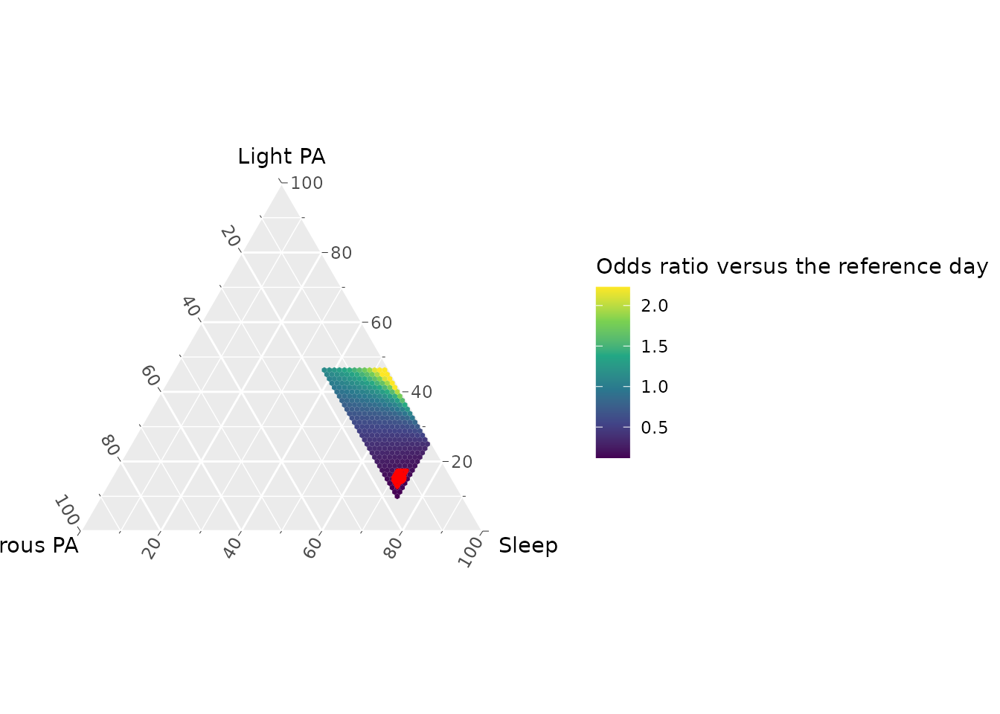
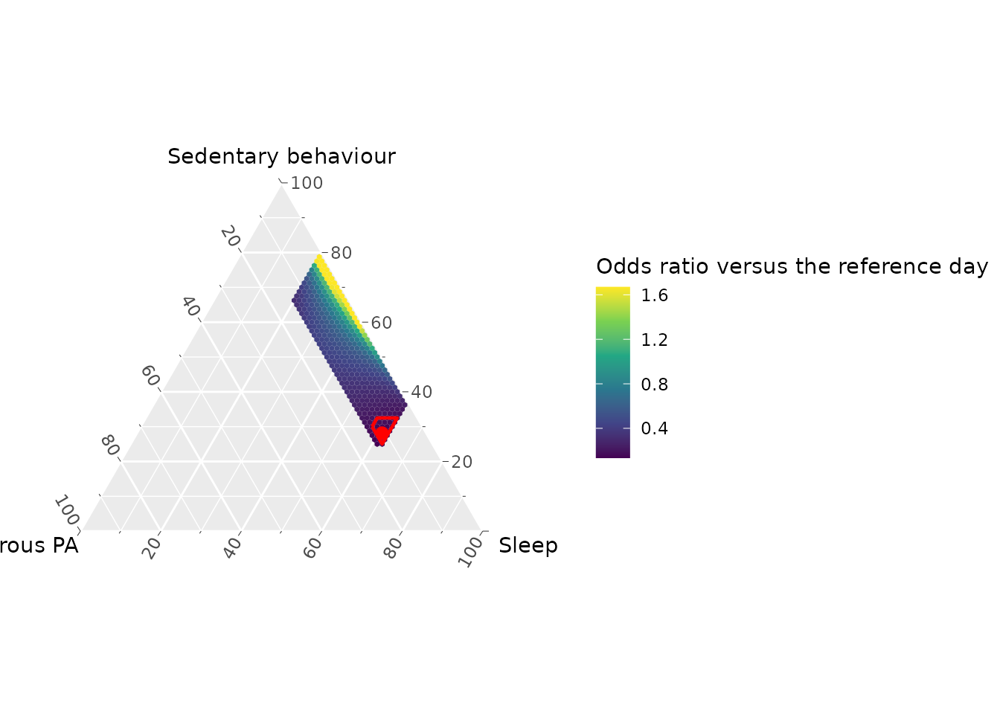

A Goldilocks zone is the set of daily time-use compositions yielding
the best predicted values of one or more health outcomes, summarized by
its closed geometric mean as the optimal composition (Dumuid et al.,
2021). Because a model that is purely linear in ILR coordinates has no
interior optimum, we fit models with
curvature = TRUE—equivalent to the full quadratic formula
ilr()^2 + I(ilr()^2) in
vignette("advanced-models", package = "timecoda").
The timeuse data are simulated, so the zones below
illustrate the computation rather than substantive guidelines.
cd <- declare_composition(
data = timeuse,
parts = c("MVPA", "LPA", "SB", "SPT"),
closure = 1440,
units = "min/day",
labels = c(
MVPA = "Moderate-to-vigorous PA",
LPA = "Light PA",
SB = "Sedentary behaviour",
SPT = "Sleep"
)
)
fit_bmi <- comp_iv(comp = cd, outcome = "zbmi", model = "lm",
covariates = "sex", curvature = TRUE)
fit_ob <- comp_iv(comp = cd, outcome = "obesity", model = "glm",
family = "binomial", covariates = "sex", curvature = TRUE)Searching a single outcome
Since lower zbmi is better, we search
fit_bmi with direction = "min". The remaining
arguments below are written out at their defaults for a 1,440-minute day
(a per-part box of mean \pm 3 SD,
10-minute grid spacing, top 5% of predictions):
opt <- optimal_composition(
object = fit_bmi,
direction = "min",
zone = 0.95,
region = "box",
sd = 3,
spacing = 10,
type = "relative"
)
opt
#> <optimal_comp> Goldilocks-zone search: zbmi
#>
#> Search
#> Parts Moderate-to-vigorous PA, Light PA, Sedentary behaviour, Sleep
#> (total = 1440 min/day)
#> Region per-part box of the mean +/- 3 SD
#> Grid multiples of 10 min/day; 36,611 candidates
#> Scale Mean difference versus the reference day
#> Zone rule best 5% of predictions, lower is better
#>
#> Region limits (min/day)
#> lower upper
#> Moderate-to-vigorous PA 0.1* 180.0
#> Light PA 51.8* 503.3
#> Sedentary behaviour 315.6* 1013.4
#> Sleep 239.9* 809.4
#> * the part's observed minimum
#>
#> Zone for zbmi: 1,831 compositions (centre [min; max])
#> Moderate-to-vigorous PA 125.2 [ 30.0; 170.0]
#> Light PA 267.2 [110.0; 480.0]
#> Sedentary behaviour 353.9 [320.0; 410.0]
#> Sleep 693.6 [470.0; 800.0]
#>
#> Gain from the reference day to the zone centre (95% CI)
#> zbmi Mean difference -2.54 [-3.2; -1.88] p = 5.44e-13The zone centre is the closed geometric mean of the winning
compositions, with their per-part min–max ranges in brackets. At this
centre, predicted zbmi is 2.54 units lower than at the
sample reference day (averaged over sex, as in
predict_realloc()). Note that the gain’s confidence
interval is conditional on the estimated centre; the zone location
itself has no confidence interval (see
?optimal_composition). Whenever more than half of the zone
sits within one spacing step of the region boundary, an
extra warning line flags that the true optimum may lie outside the
searched box.
Because the candidate grid is deterministic and order-invariant, repeated searches on the same fit always return the same centre. The steps of the search are:
![Flowchart of the optimal_composition() pipeline: one comp_iv fit, or one fit per outcome, enters; the feasible region is estimated from the sample's compositions, as a per-part box by default, the observed compositions or a data frame; candidate compositions are placed on a grid in closure units inside the region, by default every 10 minutes of a 1,440-minute day; each outcome is predicted at every candidate on a few emmeans grids; each outcome's zone keeps the best share of its predictions, or those meeting a threshold; with several outcomes the zones are intersected, and widened only with widen = TRUE; each zone is summarized by its closed geometric mean and per-part range; and the prediction at the zone centre is contrasted with the reference day as the gain. The result is an optimal_comp object read by print() and plot().](goldilocks-pipeline.svg)
Constraining the search region and grid
By default, region = "box" bounds each part to its mean
\pm 3 SD (Dumuid et al., 2021), clipped
to the observed range so candidates never extrapolate past the data. You
can replace SD limits with empirical quantiles via
coverage—for example, the 1st and 99th percentiles used by
Brakenridge et al. (2024):
optimal_composition(object = fit_bmi, direction = "min",
coverage = c(0.01, 0.99))
#> <optimal_comp> Goldilocks-zone search: zbmi
#>
#> Search
#> Parts Moderate-to-vigorous PA, Light PA, Sedentary behaviour, Sleep
#> (total = 1440 min/day)
#> Region per-part box from the 1st to the 99th percentile
#> Grid multiples of 10 min/day; 27,018 candidates
#> Scale Mean difference versus the reference day
#> Zone rule best 5% of predictions, lower is better
#>
#> Region limits (min/day)
#> lower upper
#> Moderate-to-vigorous PA 1.2 199.0
#> Light PA 68.0 422.0
#> Sedentary behaviour 390.9 925.0
#> Sleep 255.4 739.9
#>
#> Zone for zbmi: 1,351 compositions (centre [min; max])
#> Moderate-to-vigorous PA 150.4 [ 60.0; 190.0]
#> Light PA 242.6 [100.0; 420.0]
#> Sedentary behaviour 428.9 [400.0; 480.0]
#> Sleep 618.0 [430.0; 730.0]
#>
#> Gain from the reference day to the zone centre (95% CI)
#> zbmi Mean difference -2.07 [-2.52; -1.63] p < 2e-16Alternatively, you can evaluate only the observed participant
compositions with region = "observed" (Lund Rasmussen et
al., 2023), or pass a custom data frame of candidate compositions on the
closure scale:
optimal_composition(object = fit_bmi, direction = "min", region = "observed")
#> <optimal_comp> Goldilocks-zone search: zbmi
#>
#> Search
#> Parts Moderate-to-vigorous PA, Light PA, Sedentary behaviour, Sleep
#> (total = 1440 min/day)
#> Region the sample's own compositions
#> Candidates 300
#> Scale Mean difference versus the reference day
#> Zone rule best 5% of predictions, lower is better
#>
#> Candidate range (min/day)
#> lower upper
#> Moderate-to-vigorous PA 0.1 240.0
#> Light PA 51.8 504.3
#> Sedentary behaviour 315.6 1036.9
#> Sleep 239.9 815.2
#>
#> Zone for zbmi: 16 compositions (centre [min; max])
#> Moderate-to-vigorous PA 112.2 [ 46.0; 240.0]
#> Light PA 262.2 [185.3; 361.9]
#> Sedentary behaviour 454.0 [315.6; 552.0]
#> Sleep 611.5 [447.7; 815.2]
#>
#> Gain from the reference day to the zone centre (95% CI)
#> zbmi Mean difference -1.77 [-2.12; -1.41] p < 2e-16On the default grid, the first D - 1
parts step in multiples of spacing (defaulting to 1/144 of the closure, or 10 minutes for a
1,440-minute day) and the last part takes the remainder. Searches stop
with an error if the region holds more than 1,000,000 candidates. A
coarser step speeds up the search with little change to the centre
(119.0 vs. 125.2 minutes of MVPA here):
optimal_composition(object = fit_bmi, direction = "min", spacing = 30)
#> <optimal_comp> Goldilocks-zone search: zbmi
#>
#> Search
#> Parts Moderate-to-vigorous PA, Light PA, Sedentary behaviour, Sleep
#> (total = 1440 min/day)
#> Region per-part box of the mean +/- 3 SD
#> Grid multiples of 30 min/day; 1,220 candidates
#> Scale Mean difference versus the reference day
#> Zone rule best 5% of predictions, lower is better
#>
#> Region limits (min/day)
#> lower upper
#> Moderate-to-vigorous PA 0.1* 180.0
#> Light PA 51.8* 503.3
#> Sedentary behaviour 315.6* 1013.4
#> Sleep 239.9* 809.4
#> * the part's observed minimum
#>
#> Zone for zbmi: 62 compositions (centre [min; max])
#> Moderate-to-vigorous PA 119.0 [ 60.0; 150.0]
#> Light PA 276.5 [150.0; 450.0]
#> Sedentary behaviour 355.2 [330.0; 390.0]
#> Sleep 689.3 [510.0; 780.0]
#> 77% of the zone lies near the edge of the region (its outer shell); the best
#> composition may lie beyond it.
#>
#> Gain from the reference day to the zone centre (95% CI)
#> zbmi Mean difference -2.5 [-3.15; -1.84] p = 6.01e-13Defining the zone and baseline
By default, the zone keeps the top 1 -
\text{zone} share of candidate compositions ranked in the desired
direction ("max" by default, or
"min" when lower predictions are better). Setting
zone = 0.95 keeps the best 5% of predictions; setting
zone = 0.15 keeps the best 85%—matching the
healthy-adiposity rule of Lund Rasmussen et al. (2023), which retains
all predictions below the 85th percentile:
optimal_composition(object = fit_bmi, direction = "min", zone = 0.15)
#> <optimal_comp> Goldilocks-zone search: zbmi
#>
#> Search
#> Parts Moderate-to-vigorous PA, Light PA, Sedentary behaviour, Sleep
#> (total = 1440 min/day)
#> Region per-part box of the mean +/- 3 SD
#> Grid multiples of 10 min/day; 36,611 candidates
#> Scale Mean difference versus the reference day
#> Zone rule best 85% of predictions, lower is better
#>
#> Region limits (min/day)
#> lower upper
#> Moderate-to-vigorous PA 0.1* 180.0
#> Light PA 51.8* 503.3
#> Sedentary behaviour 315.6* 1013.4
#> Sleep 239.9* 809.4
#> * the part's observed minimum
#>
#> Zone for zbmi: 31,120 compositions (centre [min; max])
#> Moderate-to-vigorous PA 89.8 [ 10.0; 170.0]
#> Light PA 250.6 [ 60.0; 500.0]
#> Sedentary behaviour 591.0 [320.0; 1010.0]
#> Sleep 508.6 [240.0; 800.0]
#>
#> Gain from the reference day to the zone centre (95% CI)
#> zbmi Mean difference -0.987 [-1.15; -0.822] p < 2e-16Because type = "relative" and
type = "absolute" preserve the ordering of candidate
predictions, a quantile-based zone contains the exact same compositions
under either type.
To define a zone by a clinical cut-off or band instead of a quantile
(Vindiš et al., 2025), pass threshold. Cut-offs are
evaluated on the type scale, so a threshold on
zbmi itself requires type = "absolute"
(whereas the default type = "relative" evaluates
differences from from):
optimal_composition(object = fit_bmi, direction = "min", type = "absolute",
threshold = list(zbmi = -0.5))
#> <optimal_comp> Goldilocks-zone search: zbmi
#>
#> Search
#> Parts Moderate-to-vigorous PA, Light PA, Sedentary behaviour, Sleep
#> (total = 1440 min/day)
#> Region per-part box of the mean +/- 3 SD
#> Grid multiples of 10 min/day; 36,611 candidates
#> Scale predicted response
#> Zone rule predicted response <= -0.5
#>
#> Region limits (min/day)
#> lower upper
#> Moderate-to-vigorous PA 0.1* 180.0
#> Light PA 51.8* 503.3
#> Sedentary behaviour 315.6* 1013.4
#> Sleep 239.9* 809.4
#> * the part's observed minimum
#>
#> Zone for zbmi: 23,363 compositions (centre [min; max])
#> Moderate-to-vigorous PA 101.9 [ 10.0; 170.0]
#> Light PA 268.0 [ 60.0; 500.0]
#> Sedentary behaviour 543.1 [320.0; 990.0]
#> Sleep 527.0 [240.0; 800.0]
#> Predicted zbmi at the zone centre: -1.24 [-1.46; -1.02]
#>
#> Gain from the reference day to the zone centre (95% CI)
#> zbmi Mean difference -1.24 [-1.46; -1.02] p < 2e-16To measure the gain against a custom baseline day instead of the
sample geometric mean, pass that day to from (which leaves
the zone and centre unchanged, shifting only the contrast):
optimal_composition(object = fit_bmi, direction = "min",
from = c(MVPA = 30, LPA = 240, SB = 660, SPT = 510))
#> <optimal_comp> Goldilocks-zone search: zbmi
#>
#> Search
#> Parts Moderate-to-vigorous PA, Light PA, Sedentary behaviour, Sleep
#> (total = 1440 min/day)
#> Region per-part box of the mean +/- 3 SD
#> Grid multiples of 10 min/day; 36,611 candidates
#> Scale Mean difference versus the given day
#> Zone rule best 5% of predictions, lower is better
#>
#> Region limits (min/day)
#> lower upper
#> Moderate-to-vigorous PA 0.1* 180.0
#> Light PA 51.8* 503.3
#> Sedentary behaviour 315.6* 1013.4
#> Sleep 239.9* 809.4
#> * the part's observed minimum
#>
#> Zone for zbmi: 1,831 compositions (centre [min; max])
#> Moderate-to-vigorous PA 125.2 [ 30.0; 170.0]
#> Light PA 267.2 [110.0; 480.0]
#> Sedentary behaviour 353.9 [320.0; 410.0]
#> Sleep 693.6 [470.0; 800.0]
#>
#> Gain from the given day to the zone centre (95% CI)
#> zbmi Mean difference -2.45 [-3.1; -1.79] p = 2.2e-12Balancing multiple outcomes
To find compositions that perform well across several outcomes at
once, pass a named list of fits (Dumuid et al., 2021; Duncan et al.,
2024). All outcomes are scored on the same candidate grid, and
Overall zone reports their intersection:
opt2 <- optimal_composition(object = list(zbmi = fit_bmi, obesity = fit_ob),
direction = "min")
opt2
#> <optimal_comp> Goldilocks-zone search: zbmi, obesity
#>
#> Search
#> Parts Moderate-to-vigorous PA, Light PA, Sedentary behaviour, Sleep
#> (total = 1440 min/day)
#> Region per-part box of the mean +/- 3 SD
#> Grid multiples of 10 min/day; 36,611 candidates
#> Scale Mean difference (zbmi), Odds ratio (obesity), versus the reference
#> day
#> Zone rule best 5% of predictions, lower is better
#>
#> Region limits (min/day)
#> lower upper
#> Moderate-to-vigorous PA 0.1* 180.0
#> Light PA 51.8* 503.3
#> Sedentary behaviour 315.6* 1013.4
#> Sleep 239.9* 809.4
#> * the part's observed minimum
#>
#> Zone for zbmi: 1,831 compositions (centre [min; max])
#> Moderate-to-vigorous PA 125.2 [ 30.0; 170.0]
#> Light PA 267.2 [110.0; 480.0]
#> Sedentary behaviour 353.9 [320.0; 410.0]
#> Sleep 693.6 [470.0; 800.0]
#>
#> Zone for obesity: 1,831 compositions (centre [min; max])
#> Moderate-to-vigorous PA 136.9 [ 30.0; 170.0]
#> Light PA 197.0 [ 60.0; 500.0]
#> Sedentary behaviour 549.2 [320.0; 830.0]
#> Sleep 556.9 [240.0; 800.0]
#>
#> Overall zone: 292 compositions (centre [min; max])
#> Moderate-to-vigorous PA 139.6 [ 70.0; 170.0]
#> Light PA 166.0 [110.0; 210.0]
#> Sedentary behaviour 358.8 [320.0; 400.0]
#> Sleep 775.7 [710.0; 800.0]
#>
#> Gain from the reference day to the zone centre (95% CI)
#> zbmi Mean difference -2.56 [-3.36; -1.77] p = 9.7e-10
#> obesity Odds ratio 0.155 [0.0123; 1.95] p = 0.149At the overall centre, predicted obesity odds are 0.155 times those at the reference day, though the 95% confidence interval crosses 1.
When strict zones do not overlap, optimal_composition()
keeps each outcome at its own centre and reports
q_overlap—the largest zone value at which an
intersection would appear:
optimal_composition(object = list(zbmi = fit_bmi, obesity = fit_ob),
direction = "min", zone = 0.999)
#> The outcomes' zones share no candidate; they would meet at `zone =
#> 0.997`.
#> <optimal_comp> Goldilocks-zone search: zbmi, obesity
#>
#> Search
#> Parts Moderate-to-vigorous PA, Light PA, Sedentary behaviour, Sleep
#> (total = 1440 min/day)
#> Region per-part box of the mean +/- 3 SD
#> Grid multiples of 10 min/day; 36,611 candidates
#> Scale Mean difference (zbmi), Odds ratio (obesity), versus the reference
#> day
#> Zone rule best 0.1% of predictions, lower is better
#>
#> Region limits (min/day)
#> lower upper
#> Moderate-to-vigorous PA 0.1* 180.0
#> Light PA 51.8* 503.3
#> Sedentary behaviour 315.6* 1013.4
#> Sleep 239.9* 809.4
#> * the part's observed minimum
#>
#> Zone for zbmi: 37 compositions (centre [min; max])
#> Moderate-to-vigorous PA 157.8 [140.0; 170.0]
#> Light PA 204.8 [150.0; 260.0]
#> Sedentary behaviour 320.7 [320.0; 320.0]
#> Sleep 756.7 [690.0; 800.0]
#> 100% of the zone lies near the edge of the region (its outer shell); the best
#> composition may lie beyond it.
#>
#> Zone for obesity: 37 compositions (centre [min; max])
#> Moderate-to-vigorous PA 160.3 [140.0; 170.0]
#> Light PA 93.1 [ 60.0; 130.0]
#> Sedentary behaviour 388.3 [340.0; 420.0]
#> Sleep 798.3 [780.0; 800.0]
#> 89% of the zone lies near the edge of the region (its outer shell); the best
#> composition may lie beyond it.
#>
#> Overall zone: no overlap; the zones meet at zone = 0.997
#>
#> Gain from the reference day to each outcome's own centre (95% CI)
#> zbmi Mean difference -2.99 [-3.86; -2.11] p = 1.13e-10
#> obesity Odds ratio 0.0963 [0.00401; 2.31] p = 0.149To relax zone automatically in 0.05 steps (down to a
floor of 0.5) until an intersection is found—as in Dumuid et
al. (2021)—pass widen = TRUE (clinical
threshold rules are never widened):
optimal_composition(object = list(zbmi = fit_bmi, obesity = fit_ob),
direction = "min", zone = 0.999, widen = TRUE)
#> The outcomes' zones share no candidate at `zone = 0.999`; they were widened to
#> `zone = 0.949`, the best 5.1% of each outcome's predictions.
#> <optimal_comp> Goldilocks-zone search: zbmi, obesity
#>
#> Search
#> Parts Moderate-to-vigorous PA, Light PA, Sedentary behaviour, Sleep
#> (total = 1440 min/day)
#> Region per-part box of the mean +/- 3 SD
#> Grid multiples of 10 min/day; 36,611 candidates
#> Scale Mean difference (zbmi), Odds ratio (obesity), versus the reference
#> day
#> Zone rule best 0.1% of predictions, lower is better
#>
#> Region limits (min/day)
#> lower upper
#> Moderate-to-vigorous PA 0.1* 180.0
#> Light PA 51.8* 503.3
#> Sedentary behaviour 315.6* 1013.4
#> Sleep 239.9* 809.4
#> * the part's observed minimum
#>
#> Zones
#> No candidate is in every zone at zone = 0.999; the zones are widened to zone =
#> 0.949, the best 5.1% of each outcome's predictions
#>
#> Zone for zbmi: 1,868 compositions (centre [min; max])
#> Moderate-to-vigorous PA 124.9 [ 30.0; 170.0]
#> Light PA 267.8 [110.0; 480.0]
#> Sedentary behaviour 354.3 [320.0; 410.0]
#> Sleep 693.0 [470.0; 800.0]
#>
#> Zone for obesity: 1,868 compositions (centre [min; max])
#> Moderate-to-vigorous PA 136.5 [ 30.0; 170.0]
#> Light PA 198.0 [ 60.0; 500.0]
#> Sedentary behaviour 550.9 [320.0; 840.0]
#> Sleep 554.5 [240.0; 800.0]
#>
#> Overall zone, widened to the best 5.1%: 303 compositions (centre [min; max])
#> Moderate-to-vigorous PA 139.8 [ 70.0; 170.0]
#> Light PA 166.1 [110.0; 210.0]
#> Sedentary behaviour 359.4 [320.0; 400.0]
#> Sleep 774.6 [710.0; 800.0]
#>
#> Gain from the reference day to the zone centre (95% CI)
#> zbmi Mean difference -2.56 [-3.35; -1.76] p = 8.99e-10
#> obesity Odds ratio 0.156 [0.0125; 1.94] p = 0.148The final zone level reached is stored in
zone_used. Keep in mind that heavily widened zones may
include compositions that do not improve every outcome over the
reference day.
Subgroup optimization and other engines
When a quadratic fit includes a factor moderator (here
sex), the search splits automatically by level—just like
by in predict_realloc()—estimating a separate
feasible region from each subgroup’s rows:
fit_mod <- comp_iv(comp = cd, outcome = "zbmi", model = "lm",
moderator = "sex", curvature = TRUE)
optimal_composition(object = fit_mod, direction = "min")
#> <optimal_comp> Goldilocks-zone search: zbmi
#>
#> Search
#> Parts Moderate-to-vigorous PA, Light PA, Sedentary behaviour, Sleep
#> (total = 1440 min/day)
#> Region per-part box of the mean +/- 3 SD
#> Grid multiples of 10 min/day
#> Scale Mean difference versus the reference day
#> Zone rule best 5% of predictions, lower is better
#>
#> Region limits, sex = female (min/day)
#> lower upper
#> Moderate-to-vigorous PA 0.1* 175.0
#> Light PA 62.8* 419.5*
#> Sedentary behaviour 316.3 927.8*
#> Sleep 239.9* 786.9*
#> * the part's observed minimum or maximum
#>
#> Region limits, sex = male (min/day)
#> lower upper
#> Moderate-to-vigorous PA 1.3* 185.3
#> Light PA 51.8* 503.0
#> Sedentary behaviour 369.5* 1027.1
#> Sleep 252.8* 792.0
#> * the part's observed minimum
#>
#> sex = female: 28,679 candidates
#>
#> Zone for zbmi: 1,434 compositions (centre [min; max])
#> Moderate-to-vigorous PA 125.7 [ 40.0; 170.0]
#> Light PA 254.2 [100.0; 410.0]
#> Sedentary behaviour 354.6 [320.0; 410.0]
#> Sleep 705.5 [530.0; 780.0]
#>
#> Gain from the reference day to the zone centre (95% CI)
#> zbmi Mean difference -2.6 [-3.32; -1.88] p = 8.66e-12
#>
#> sex = male: 34,119 candidates
#>
#> Zone for zbmi: 1,706 compositions (centre [min; max])
#> Moderate-to-vigorous PA 142.9 [ 60.0; 180.0]
#> Light PA 257.7 [100.0; 490.0]
#> Sedentary behaviour 401.8 [370.0; 460.0]
#> Sleep 637.6 [400.0; 790.0]
#>
#> Gain from the reference day to the zone centre (95% CI)
#> zbmi Mean difference -2.12 [-2.7; -1.55] p = 3.17e-12If you pin the covariate to one level with at, the
feasible region is estimated from the full sample instead:
optimal_composition(object = fit_mod, direction = "min",
at = list(sex = "female"))
#> <optimal_comp> Goldilocks-zone search: zbmi
#>
#> Search
#> Parts Moderate-to-vigorous PA, Light PA, Sedentary behaviour, Sleep
#> (total = 1440 min/day)
#> Region per-part box of the mean +/- 3 SD
#> Grid multiples of 10 min/day; 36,611 candidates
#> Scale Mean difference versus the reference day
#> Zone rule best 5% of predictions, lower is better
#>
#> Region limits (min/day)
#> lower upper
#> Moderate-to-vigorous PA 0.1* 180.0
#> Light PA 51.8* 503.3
#> Sedentary behaviour 315.6* 1013.4
#> Sleep 239.9* 809.4
#> * the part's observed minimum
#>
#> Zone for zbmi: 1,831 compositions (centre [min; max])
#> Moderate-to-vigorous PA 121.8 [ 30.0; 170.0]
#> Light PA 247.2 [ 90.0; 440.0]
#> Sedentary behaviour 357.3 [320.0; 410.0]
#> Sleep 713.7 [510.0; 800.0]
#>
#> Gain from the reference day to the zone centre (95% CI)
#> zbmi Mean difference -2.58 [-3.3; -1.87] p = 7.24e-12Because the default type = "relative" scores candidates
on the contrast scale used by predict_realloc(),
optimization also works on survival ("cox",
"coxme"), ordinal ("clm",
"clmm"), and multinomial ("mblogit") fits. For
a Cox model, direction = "min" searches for the lowest
hazard of onset:
fit_cox <- comp_iv(comp = cd, time = "time", event = "event", model = "cox",
covariates = "sex", curvature = TRUE)
optimal_composition(object = list(onset = fit_cox), direction = "min")
#> <optimal_comp> Goldilocks-zone search: onset
#>
#> Search
#> Parts Moderate-to-vigorous PA, Light PA, Sedentary behaviour, Sleep
#> (total = 1440 min/day)
#> Region per-part box of the mean +/- 3 SD
#> Grid multiples of 10 min/day; 36,611 candidates
#> Scale Hazard ratio versus the reference day
#> Zone rule best 5% of predictions, lower is better
#>
#> Region limits (min/day)
#> lower upper
#> Moderate-to-vigorous PA 0.1* 180.0
#> Light PA 51.8* 503.3
#> Sedentary behaviour 315.6* 1013.4
#> Sleep 239.9* 809.4
#> * the part's observed minimum
#>
#> Zone for onset: 1,831 compositions (centre [min; max])
#> Moderate-to-vigorous PA 151.4 [ 80.0; 170.0]
#> Light PA 339.9 [ 90.0; 500.0]
#> Sedentary behaviour 375.7 [320.0; 570.0]
#> Sleep 573.0 [240.0; 800.0]
#>
#> Gain from the reference day to the zone centre (95% CI)
#> onset Hazard ratio 0.205 [0.0876; 0.48] p = 0.000259On ordinal fits, direction = "max" favours higher
outcome categories; on multinomial fits, specify the target level with
category (see ?optimal_composition).
Plotting the zone on the response surface
To inspect the zone visually, plot() draws ternary
slices through the zone centre (red point), holding the fourth behaviour
at its centre value and outlining the convex hull of the zone cells in
red (Duncan et al., 2024):
plot(x = opt)


For multi-outcome searches, select which surface to display with
outcome (the red point marks the overall centre while the
outline encloses that outcome’s own zone). For searches split by a
moderator, select a subgroup with level.
plot(x = opt2, outcome = "obesity")



What happens on a linear fit
A model without curvature terms is monotonic in ILR coordinates, so
its best predictions always lie on the outer edge of whichever
region or coverage you choose.
optimal_composition() still runs on linear fits, prints a
note flagging the absence of an interior optimum (suggesting
curvature = TRUE), and records the boundary fraction in
zones$on_boundary, but such boundary zones do not support a
Goldilocks interpretation.
References
Brakenridge, C. J., Koster, A., de Galan, B. E., Carver, A., Dumuid, D., Dzakpasu, F. Q. S., Eussen, S. J. P. M., Savelberg, H. H. C. M., Bosma, H., Owen, N., Schaper, N. C., Healy, G. N., & Dunstan, D. W. (2024). Associations of 24 h time-use compositions of sitting, standing, physical activity and sleeping with optimal cardiometabolic risk and glycaemic control: The Maastricht Study. Diabetologia, 67(7), 1356-1367.
Dumuid, D., Wake, M., Burgner, D., Tremblay, M. S., Okely, A. D., Edwards, B., Dwyer, T., & Olds, T. (2021). Balancing time use for children’s fitness and adiposity: Evidence to inform 24-hour guidelines for sleep, sedentary time and physical activity. PLoS ONE, 16(1), e0245501.
Duncan, M. J., Kuzik, N., Silva, D. A. S., Bélanger, R. E., Carson, V., Chaput, J.-P., Faulkner, G., Ferro, M. A., Turcotte-Tremblay, A.-M., Leatherdale, S. T., Patte, K. A., & Tremblay, M. S. (2024). “Goldilocks days” for adolescent mental health: Movement behaviour combinations for well-being, anxiety and depression by gender. Mental Health and Physical Activity, 26, 100572.
Lund Rasmussen, C., Gába, A., Stanford, T., Dygrýn, J., Dumuid, D., Janda, D., & Hron, K. (2023). The Goldilocks Day for healthy adiposity measures among children and adolescents. Frontiers in Public Health, 11, 1158634.
Vindiš, J., Pelclová, J., Jašková, P., & Hron, K. (2025). The Goldilocks days represent optimal time-use to prevent obesity, low physical performance, risk and fear of falling in older adults. Scientific Reports, 15, 24729.
See also
-
vignette("predicting-reallocations", package = "timecoda"): reallocation estimates between named parts, their publication table, and the reallocation figure. -
vignette("advanced-models", package = "timecoda"): the formula interface andilr(), moderation, and non-linear composition terms. -
vignette("composition-predictor", package = "timecoda"): fitting the models the search reads, and the fitted surface. -
vignette("composition-variable", package = "timecoda"): declaring and describing a composition in full. -
vignette("timecoda", package = "timecoda"): the whole workflow in one analysis.